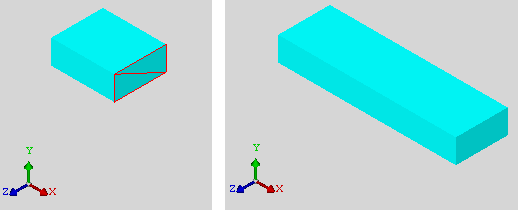
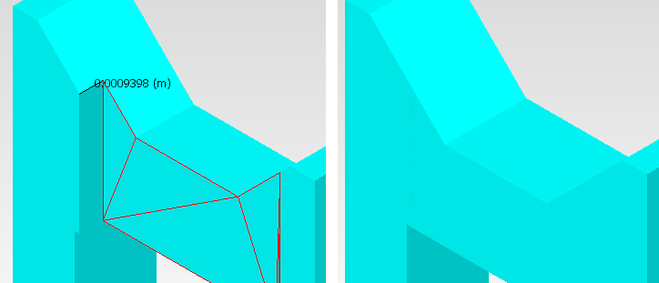

Extruding expands
the ACIS model normal to a selected face, or in a specified direction
from a selected edge.
Procedure
- Ensure the mouse is in pick
mode and the Current Selection Mode is set to Face or Edge as appropriate.
- Select the MCAD face or edge
to be extruded.
- Choose to open the Extrude
dialog box.
- Enter the distance that the
face or edge is to be moved in the Depth data entry field.
- If an edge is selected, also
choose the Direction of the extrude.
Edge extrusion is most commonly
used when representing walls or other building fabrics. Often DXF
data contains edge descriptions for both the inner and outer wall
faces. Selection of only those edges that represent the desired
wall profile is required. This can be done by careful selection
of those edges, or deletion of the bodies containing the unwanted
edges followed by a rubber band select of the remaining desired
edges. This latter method is often preferable.
- Click Apply.
Results
An example of extruding
a selected face is shown in Figure 1. The direction is normal to the face.
Figure 1. Extruded MCAD Face
In Figure 2, the Measure tool has been used to
determine the exact extrude distance of a face to align with another
face.
Figure 2. Extruded Face to a Measured Distance